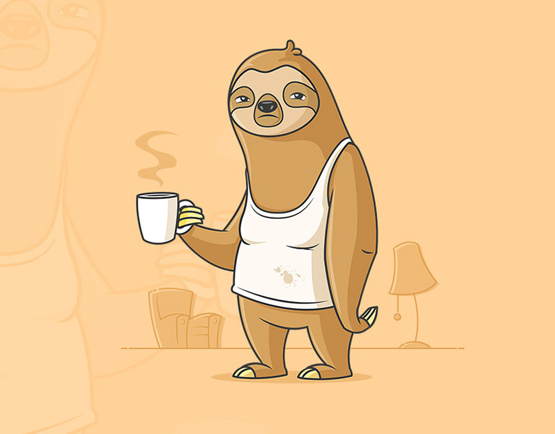
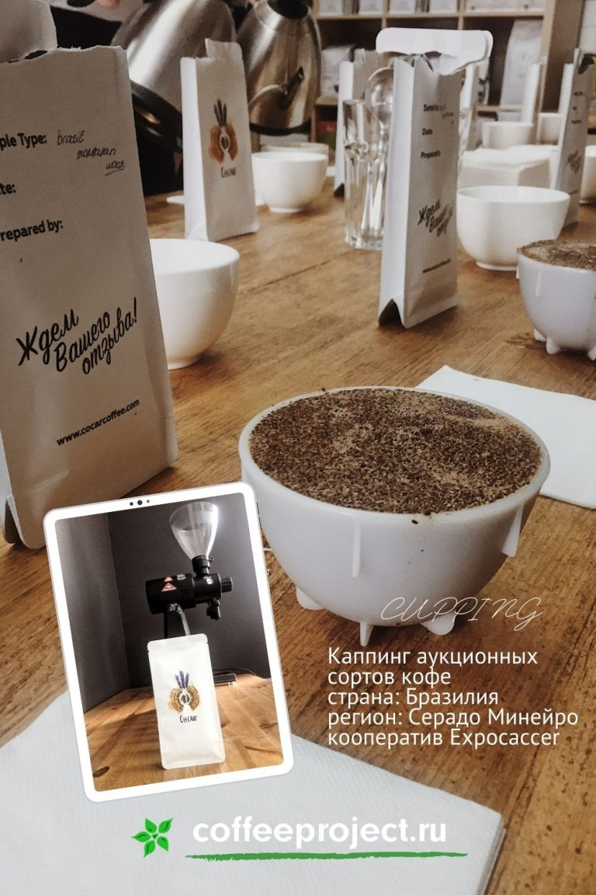
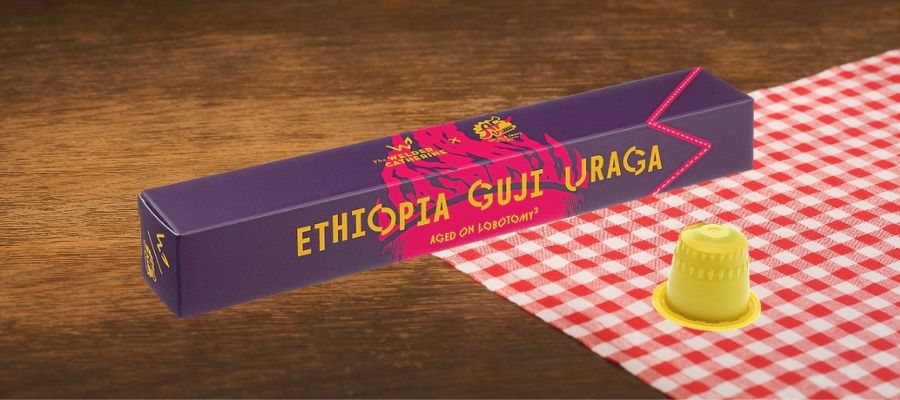
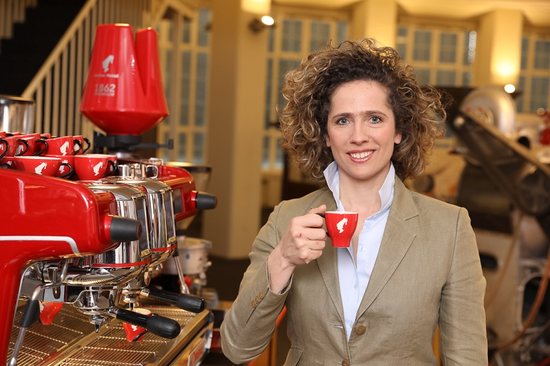

-

Шутки про кофе
Мне кофе, пожалуйста! – Латте, макиато, раф? – Я говорю, КОФЕ мне сделай! – Капучино, мокачино, мокка? – Я говорю, КОФЕ мне сделай, КОФЕ!... Читать дальше.
-

Бразильский кофе: каппинг образцов аукционных лотов сезона 2020
Компания Cocar представила десять образов аукционного кофе кооператива Expocaccer из региона Cerrado Mineiro (Бразилия)... Читать дальше.
-

Спешелти кофе в капсулах, а это возможно?
Прогресс не стоит на месте и кофе в капсулах тому подтверждение. Настоящий зерновой эспрессо, наконец-то можно приготовить дома в самой простой кофемашинке купленной в ближайшем магазине за пару тысяч рублей. К счастью с недавнего времени эта магия доступна не только большим корпорациям, но и микрообжарщикам с их уникальными сортами кофе.... Читать дальше.
-

Как COVID-19 влияет на кофейную индустрию, интервью Президента SCA Christina Meinl
Президент SCA рассказала нам о том, как пандемия отразилась на кофейной индустрии: Covid-19 влияет на всю цепочку поставок. Если сегодня нам не хватает запасов в кофейне, в будущем может не быть сырья... Читать дальше.
-
Независимый Кофейный Фестиваль с 17 февраля по 1 марта 2020 Москва
Кофейни Bro.We, Cezve Coffee, Кооператив Чёрный, LES, Point Coffee and Food и Floo объединились, чтобы провести Независимый Кофейный Фестиваль. Каждая кофейня в своем меню подготовила специальный сет... Читать дальше.
 25-60-60")